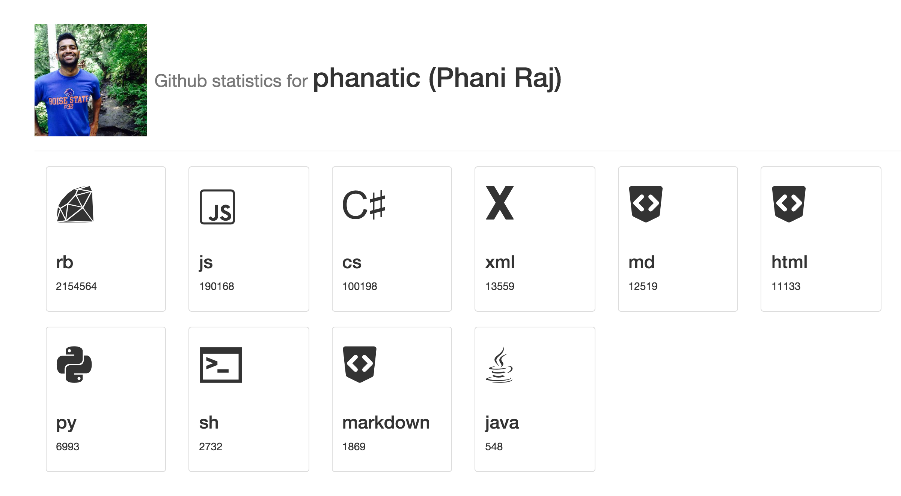

What is Gitstats?.
Gitstats is a simple node.js application that goes through every commit you've ever made, in every repo, and for every language gives you a count of the number of lines added, deleted.
How do I get my own?
Just head on over to Gitstats.me, login with your github account and start generating!
Cool! I want to self-host this IN THE CLOUD!, how do I do that?
I don't trust someone else to run this for me, I'd like to self-host it
Clone this repo and get hosting!